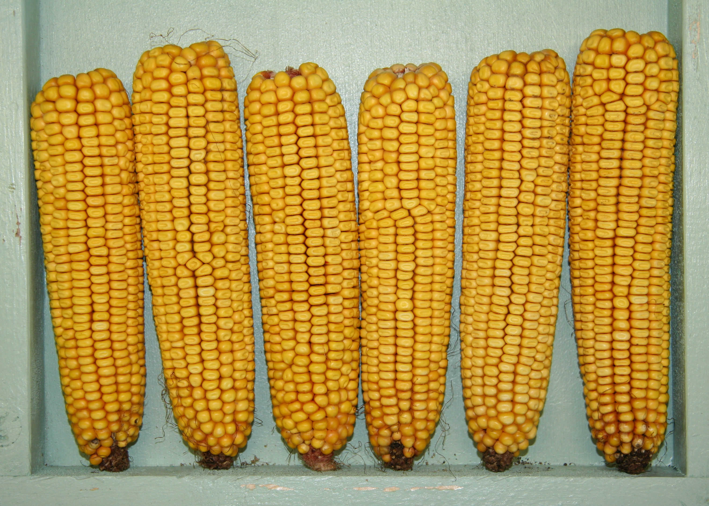
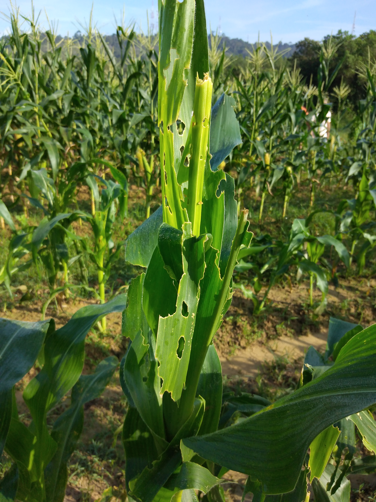

Concurso Agrinho 2026 - Produção de Bioinseticidas
Projeto por Bianca Vinhaski


Sua lavoura de milho foi atacada pela Lagarta-do-cartucho (Spodoptera frugiperda). Em vez de usar químicos pesados, vamos coletar algumas lagartas infectadas pelo vírus natural da própria espécie (Baculovírus).
As lagartas coletadas foram processadas para isolar o vírus. Agora, precisamos multiplicar esse bioinseticida natural em larga escala.
Seu bioinseticida baseado na própria praga está pronto! Vamos aplicá-lo na lavoura via pulverização com drones (reduzindo também a pegada de carbono).
Resultado da Operação:
Conclusão: Ao utilizar a própria praga para produzir o controle biológico, alcançamos o equilíbrio perfeito. Fortalecemos o Agro sem destruir o Futuro Sustentável!